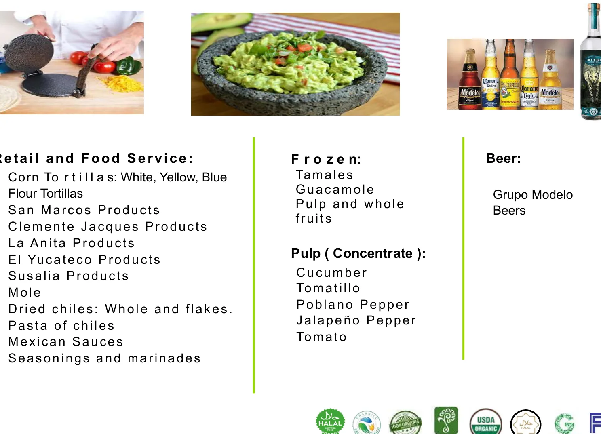
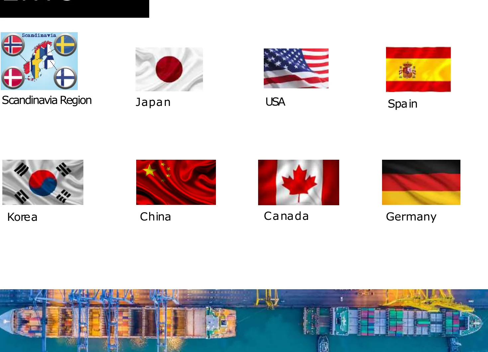
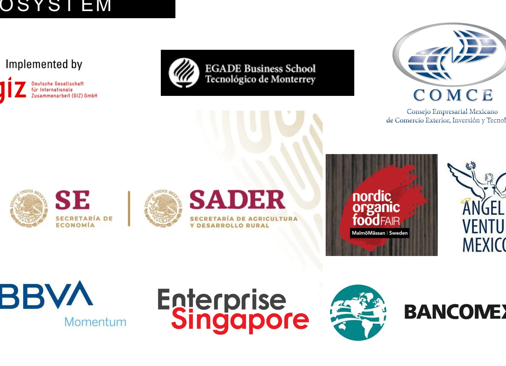
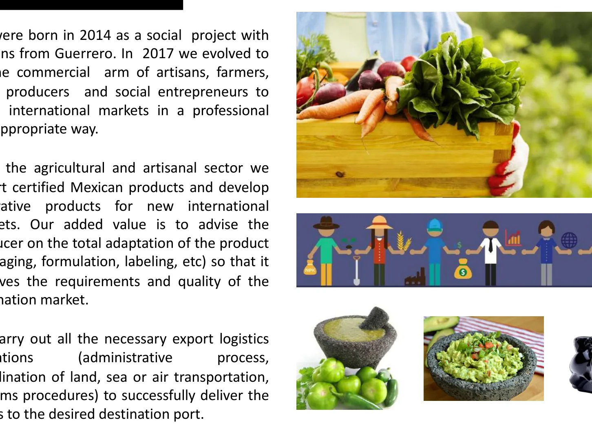
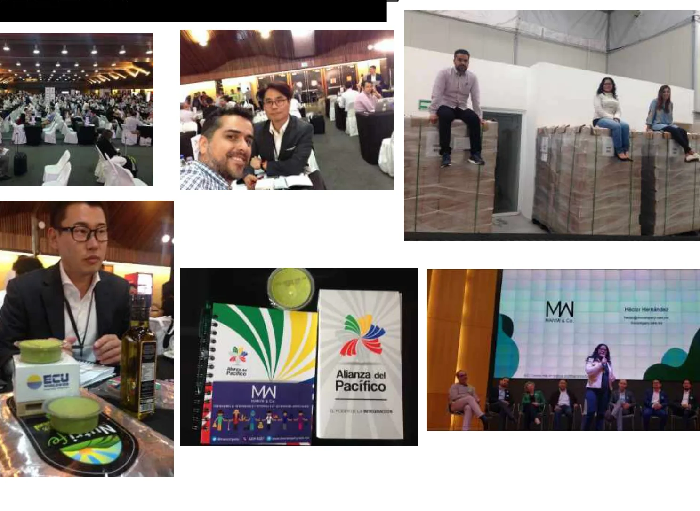
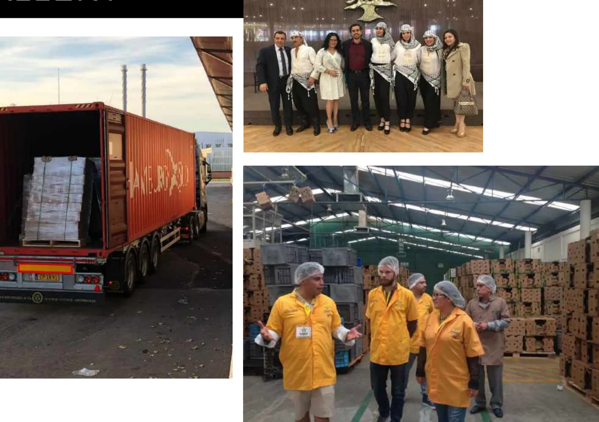
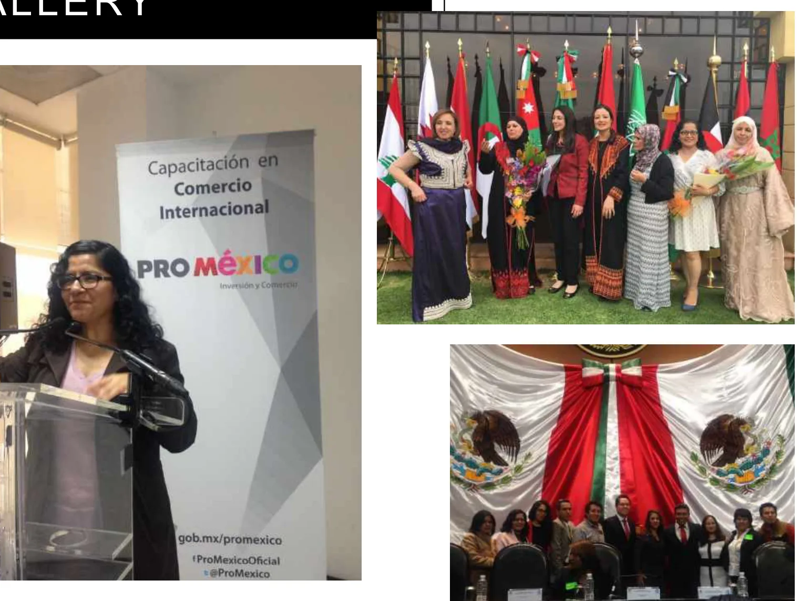

Producto principal
Descripción breve del producto, uso comercial, presentación y atributos de valor para importadores.
Empresa exportadora enfocada en calidad, cumplimiento documental y logística confiable para compradores, distribuidores e importadores internacionales.
Sustituiremos esta sección con los productos reales del PDF: fichas, presentaciones, capacidades, origen y ventajas competitivas.
Descripción breve del producto, uso comercial, presentación y atributos de valor para importadores.
Estados Unidos, Japón, Europa u otros destinos según documentación, permisos y demanda comercial.
Venta por volumen, distribución, marca privada, contratos recurrentes o pedidos bajo especificación.
Resumen visual del dossier corporativo: origen social, oferta exportable, mercados internacionales, logistica y ecosistema colaborativo.

Retail, food service, congelados, pulpas, salsas, chiles, tortillas, mole y bebidas.

Japon, USA, Espana, Corea, China, Canada, Alemania y Escandinavia.

Aliados institucionales, comerciales y de desarrollo empresarial.

Corporativo
Ferias y promocion
Operacion logistica
Responsabilidad socialImagenes extraidas y optimizadas desde el dossier corporativo de MANIW & Co. para uso web ligero.
Base regulatoria preparada para documentar operaciones de exportación según producto, fracción arancelaria, país de destino y requisitos del comprador.
RFC, e.firma, situación fiscal y Padrón de Exportadores Sectorial cuando la mercancía y su fracción arancelaria lo requieran.
Referencia oficialClasificación arancelaria, aranceles, permisos, avisos y regulaciones no arancelarias deben revisarse antes del despacho.
Referencia oficialRegla de origen, elegibilidad para preferencias arancelarias y certificado o declaración de origen según tratado aplicable.
Referencia oficialValidación por producto y destino: aranceles, IVA, procedimientos, requisitos de entrada, etiquetado y reglas de origen.
Referencia oficialPara alimentos, plantas, animales o productos regulados: certificados, controles oficiales, lote, trazabilidad y plataformas como TRACES.
Referencia oficialFactura comercial, packing list, ficha técnica, Incoterm, HS Code, etiquetado, embalaje, transporte, seguro y expediente por operación.
Referencia oficialBase preparada para Incoterms, tiempos, embalaje, puertos, mínimos de compra y coordinación con freight forwarders.
Ideal para volumen, pallets, contenedores o embarques consolidados.
Para muestras, urgencias comerciales o productos de alto valor relativo.
Opción eficiente para Norteamérica, frontera y distribución regional.